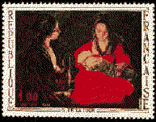

 |
ALLGEMEINE INFORMATIONEN |
|
Eine Datenbank kostenlos
hinunterladen
- Um eine Datenbank und Bestandsliste "Gemaelde und Kunst auf Briefmarken" herunterzuladen, bitte die Verbindung links: DB herunterladen anklicken. Etwa 80% der
betroffenen Briefmarken der Welt sind bereits erfasst. Wenn Sie weitere Informationen
benoetigen, nehmen Sie bitte mittels E-Mail Kontakt mit mir auf (spaam aus).
Kunst auf Briefmarken Internet Klub
- Über 800Sammler aus 80 Ländern warten auf
Sie! Der Beitritt ist und wird immer kostenlos bleiben. Um mehr zu erfahren, drücken Sie
auf die Verbindung (links): PASIC Statutes. Die Liste aller Mitglider finden Sie unter: PASIC Mitglieder.
Die erste Internet
Briefmarken-Kunstgalerie
- Sie können eine Kunstalerie mit den
schönsten Briefmarken der Welt 24 Stunden am Tag, 7 Tage pro Woche kostenlos besichtigen.
Bitte auf die Verbindung Kunstgalerie drücken. Viel Spass!
Published: 1997. Revised:
Jan. 15, 2020
.
Copyright © 1997 - 2020 by Victor Manta,
Switzerland.
All rights reserved in all
countries. |
|
 |